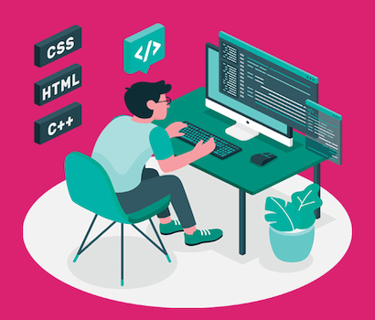

Професія Front-End Developer та її переваги

Кожен веб-сайт, програма чи додаток для смартфону має ту частину, з якою взаємодіють користувачі. Коли Ви заходите на веб-сайт, Ви бачите якусь початкову сторінку, текст на ній, меню, графічні й інші елементи, які полегшують сприйняття, навігацію та додають корисності інформації. Усі вони підпадають під загальний термін “інтерфейс”. Саме Front-End забезпечує реалізацію користувацького інтерфейсу, який є невід’ємною частиною веб-сайту або програми. Всьому цьому навчають на спеціалізованих курсах фронтенд.
Хто такий Front-End Developer?
Front-End Developer (Front-End програміст, розробник інтерфейсу) є професіоналом, відповідальним за розробку та реалізацію інтерфейсу. Користувачам потрібен цей інтерфейс, щоб вони могли отримати доступ до відповідної сторінки та інформації на ній. Розробник інтерфейсу використовуючи мови кодування, такі як CSS, HTML, JavaScript та інші, забезпечує правильне відображення інформації на різних пристроях (настільних комп’ютерах, планшетах, смартфонах тощо).
Ролі та обов’язки Front-End розробника
Якщо Вам цікаво, чим займається розробник інтерфейсу, він повинен:
- Визначитись із дизайном та структурою веб-сторінки
- Розробити функції для покращення читабельності сайту
- Досягнути балансу між функціональним та естетичним дизайном.
- Переконатися, що веб-дизайн підтримує смартфон
- Створити зрозумілий для подальшого використання код
- Переконатись, що веб-сторінки оптимізовані для найкращої швидкості та масштабованості
- Зберігати бренд у всьому дизайні
Навички, необхідні для того, щоб стати Front-End Developer

Оскільки реалізація інтерфейсу є надзвичайно важливою, Front-End Developer повинен мати добре укомплектований персональний набір інструментів. Отже, навички розробника інтерфейсу зазвичай включають:
- Диплом з інформатики або подібної галузі
- Володіння мовами кодування, такими як HTML, CSS, JavaScript, jQuery
- Досвід роботи з програмами графічного дизайну (наприклад, Adobe Illustrator)
- Розуміння принципів SEO
- Володіння хорошими міжособистісними навичками для командної роботи
Як стати Front-End Developer?
- Вивчіть CSS, JavaScript та HTML. Ці мови кодування є основними, тому Вам потрібно їх освоїти. На щастя, це не дуже складна справа. Існує безліч Інтернет-ресурсів, які можуть допомогти здобути освіту з мов кодування. Щоб отримати додатковий кредит довіри у роботодавця, ознайомтесь із jQuery та JavaScript Frameworks.
- Пройдіть навчальний курс. Якщо займатися самоосвітою складно, запишіться на курси фронтенд. Немає нічого кращого від навчання у досвідчених людей у структурованому середовищі. Ви можете зробити це, відвідуючи аудиторні заняття (що може призвести до втрати вільного часу) або пройти онлайн-курс.
- Практика. Ось де старий вислів «практика робить нас досконалими» набуває значення. Почніть з малого, використовуючи свої знайдені знання для побудови невеликих частин інтерфейсу користувача, а потім повільно розширюйте. Ясна річ, Ви робитимете помилки, не хвилюйтеся. Іноді ми навчаємось більше на своїх помилках, ніж на бездоганному виконанні заучених операцій.
- Покращуйте свої навички. Перегляньте нові підручники, підпишіться на спеціалізовані спільноти у соцмережах та професійні форуми. Існують такі ресурси, як freeCodeCamp, Codecademy, Bootstrap, Vue.js, CSS Layout та Front-end Checklist, які допоможуть Вам оволодіти навичками розробки інтерфейсу, не витрачаючи зайвих грошей. Ці інструменти легко доступні в Інтернеті і можуть стати вкрай необхідним стимулом для вашої освітньої підготовки.
- Пройдіть стажування. Станьте молодшим розробником інтерфейсу (Junior Front-End Developer). Іноді найкращий спосіб засвоїти нові навички – це робота під керівництвом більш обізнаних людей. Звичайно, зарплата менша, зате в майбутньому є перспективи для зростання. Крім того, Ви будете вчитися у більш досвідчених колег, і це завжди корисно.